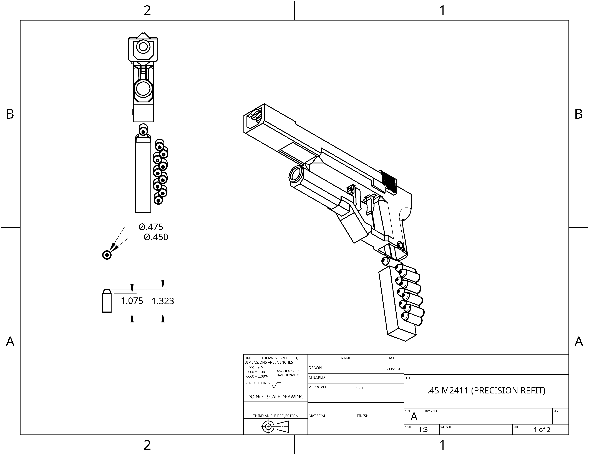
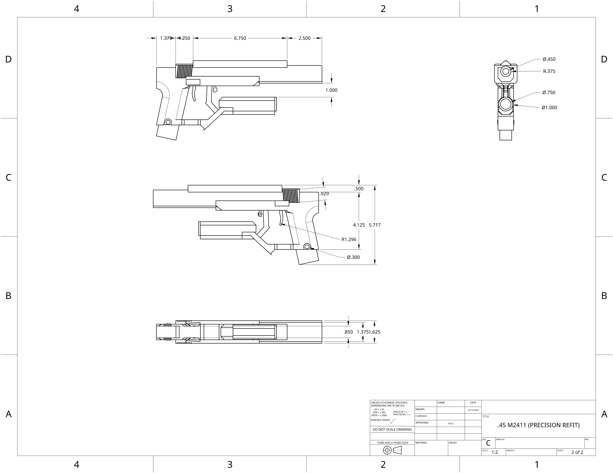

The .45 precession magnum is an over 100 year old design at the time of the conflict in the object. It utilizes Beam riding projectile technology to guide multiple hybrid shield disrupting, rigid composite rounds to weak points in armor systems.
 | | | | | | |
|---|---|---|
| Damage: | 25 | |
| Velocity: | 550mps | |
| Armor penetration: | 10mm | |
| Rate of fire: | 900rpm(within 3 shot burst) 450rpm(avg) | |
| Magazine size: | 9 |